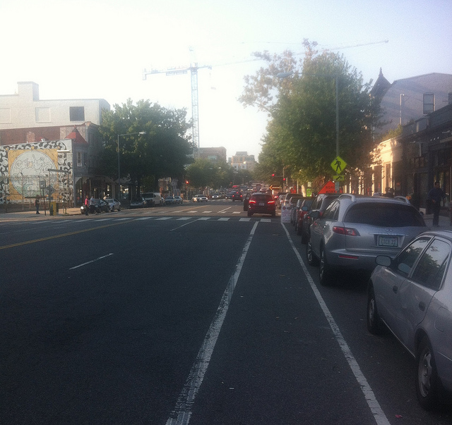
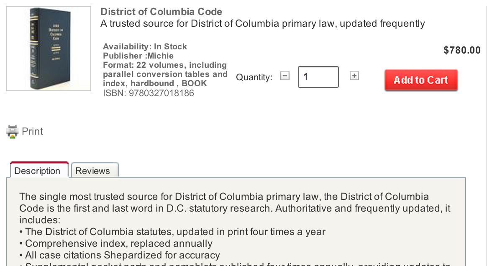

dccode.org
freeing the dc code
how it got done
first why
i ride my bike

i ride my bike
there's an illegal valet service on 14th street
 there's an illegal valet service on 14th street
not cool! let's fix this
let's link to the law
Before last month YOU COULD NOT LINK TO ANY DC LAW
YOU COULD NOT LINK TO ANY DC LAW
YOU COULD NOT CITE THE DC LAW WITH A HYPERLINK
HYPERLINKS MATTER AND THE LAW MATTERS
DC
Code?

In law, codification is the process of collecting and restating the law of a jurisdiction in certain areas, usually by subject, forming a legal code, i.e. a codex (book) of law.
The Capitalsaurus shall be the official Dinosaur of the District of Columbia. §1-161j
It shall not be lawful for any person or persons to play the game of football, or any other game with a ball, in any of the streets, avenues, or alleys in the City of Washington; nor shall it be lawful for any person or persons to play the game of bandy, shindy, or any other game by which a ball, stone, or other substance is struck or propelled by any stick, cane, or other substance in any street, avenue, or alley in the City of Washington, under a penalty of not more than $5 for each and every such offense. §22-1308
A person who commits first degree murder that constitutes an act of terrorism shall, upon conviction, be punished by imprisonment for life without the possibility of release. § 22-3153
Before last month YOU COULD NOT LINK TO ANY DC LAW
So the code is the law
Freeing?
Laws are open*
Laws are open: copyright compendium, case law, standard practice
Laws are open: everyone can agree, right?
Laws are open: so how was this one closed and how did it get to be that way?
Open means ownership
Portals != open
The Code is Codified Bills
DC's Council drafts & passes laws as bills
DC's Council posts bills to a portal
LexisNexis downloads bills and compiles them into the 'official code'
LexisNexis has the only complete digital copy of the official code
(let's get that copy)
No
Terms of Service
Copyright Infection
nongovernment, so no FOIA
so
what next?
(this is the part that took from september to april)
CONTRACTS RULE EVERYTHING
no really
CONTRACTS RULE EVERYTHING
FOIA Contract with WestLaw →
'Computer tapes' = email of Word Documents
Word Documents = gross?
Word Documents = don't care
Word Documents were copyright infected and it took a day to remove the logos
(thanks Josh Tauberer & V David Zvenyach)
so
Word Documents!
what's next?
step one: a better browser
open source & simple
simple means simple. worry about the problem at hand: putting laws on the internet. do not overarchitect. build fast.
and almost free to host
why?
open needs to become the default and it's easy
it's easy to build a better portal than lexis
it's easy to do a better job than lexis
it's cheap to do a better job than lexis
and
print (via LaTeX), searchability on google, permalinks, JSON export, and everything else
sustainable?
contractors aren't sustainable
west → lexis
took over four months to transition
could have lost data
on the other hand
open source
belongs to nobody.
is passed down.
regenerates by rewriting.
cares about data.
and makes lots of copies because that's the right way to do data.
finally we can make copies of this open data, and do more with it.
want a copy?
thanks
dccode.org
@tmcw / macwright.org
thanks carl malamud, josh tauberer, v david zvenyach, benjamin bryant, andrew schmadel, eric mill, and many more